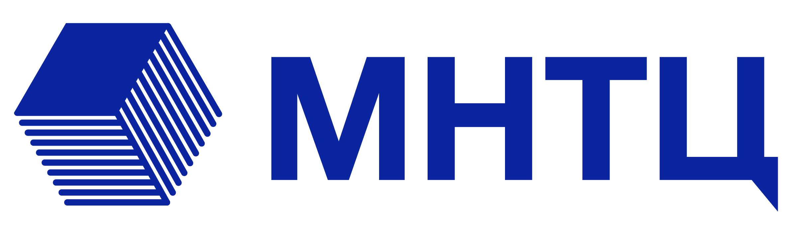

bom.json + реестр компонентов → база данных.RiskDecision с эскалацией к руководителю проекта.cdxgen.| Слой | Технологии |
|---|---|
| Бэкенд | Python FastAPI SQLAlchemy Pydantic Alembic |
| База данных | PostgreSQL |
| Фронтенд | TypeScript Next.js React Tailwind CSS |
| Аутентификация | JWT bcrypt защита от перебора |
| Работа с SBOM | CycloneDX PURL CPE 2.3 SPDX |
| Контроль качества | pytest Vitest статический анализ типизированный клиент API |
| Инфраструктура | Docker развёртывание на двух серверах |
Python · TypeScript · JavaScript · SQL · HTML · CSS · Bash · PowerShell
| Роль | Чем занимается |
|---|---|
| Архитектор и руководитель Виталий Пиков |
Архитектура, ключевые решения (ADR), приоритеты, приёмка инкрементов. |
| Разработчик | Код, ТЗ, миграции базы данных, автотесты по каждому инкременту. |
| Независимый аудитор кода | Проверяет каждый инкремент; не правит код сам, выдаёт вердикт «готово / на доработку». |
| Тестировщик E2E | Проверка готовых сценариев в реальном браузере: пользовательские пути, регрессии, граничные случаи. |